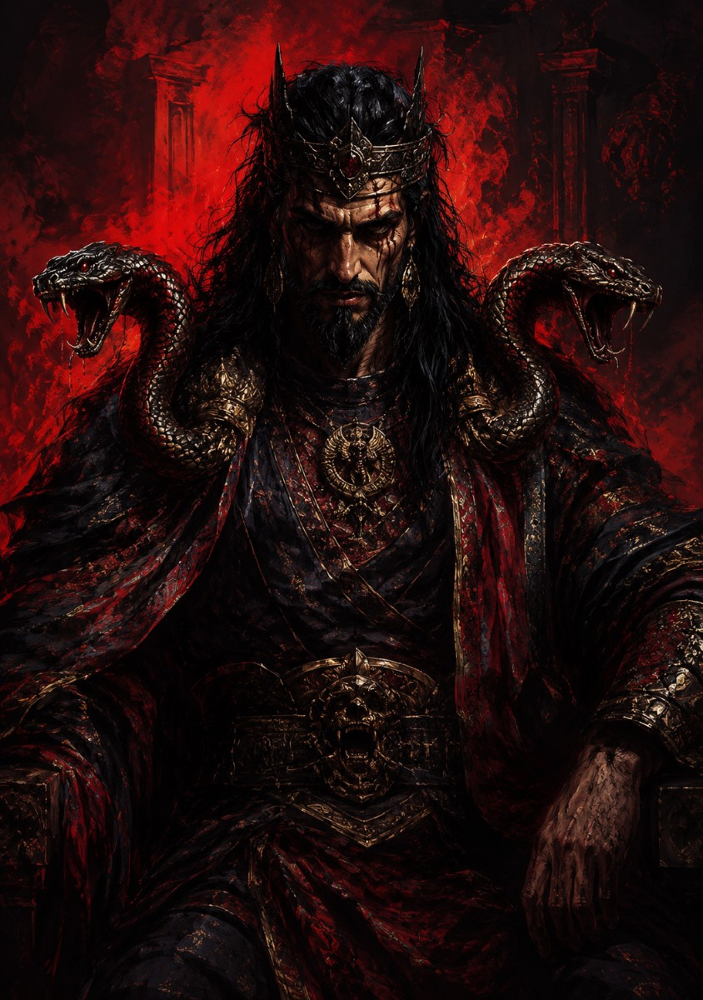
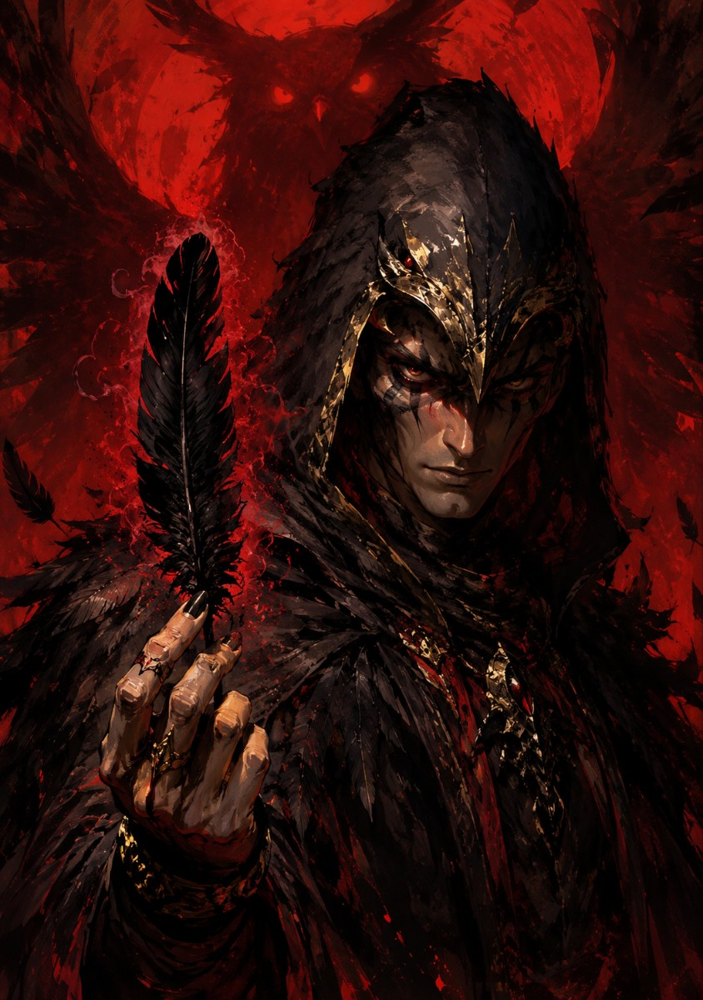
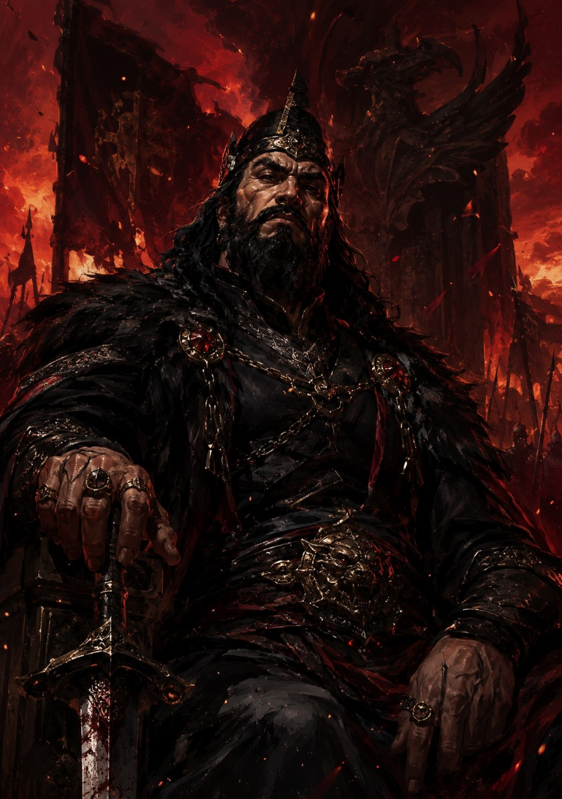
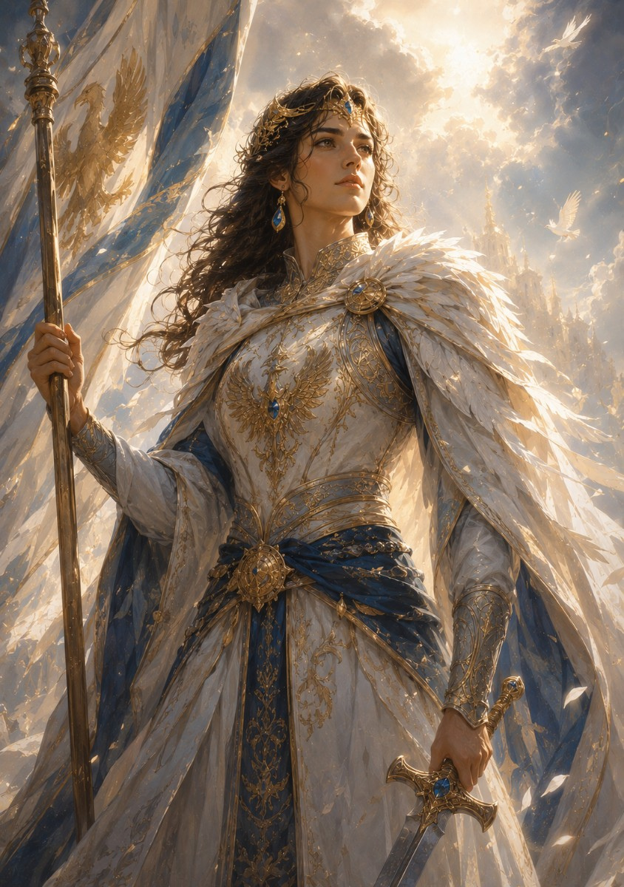
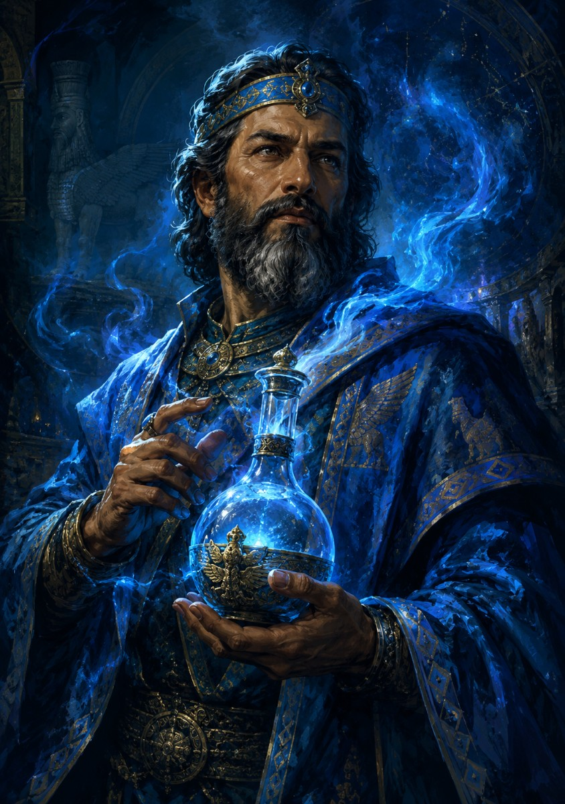
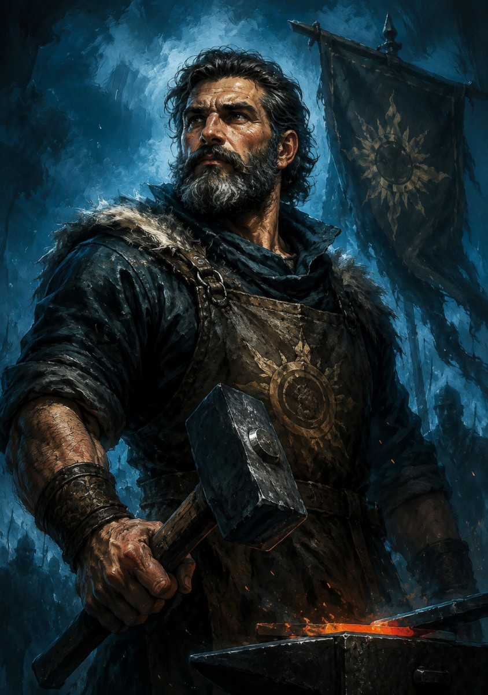
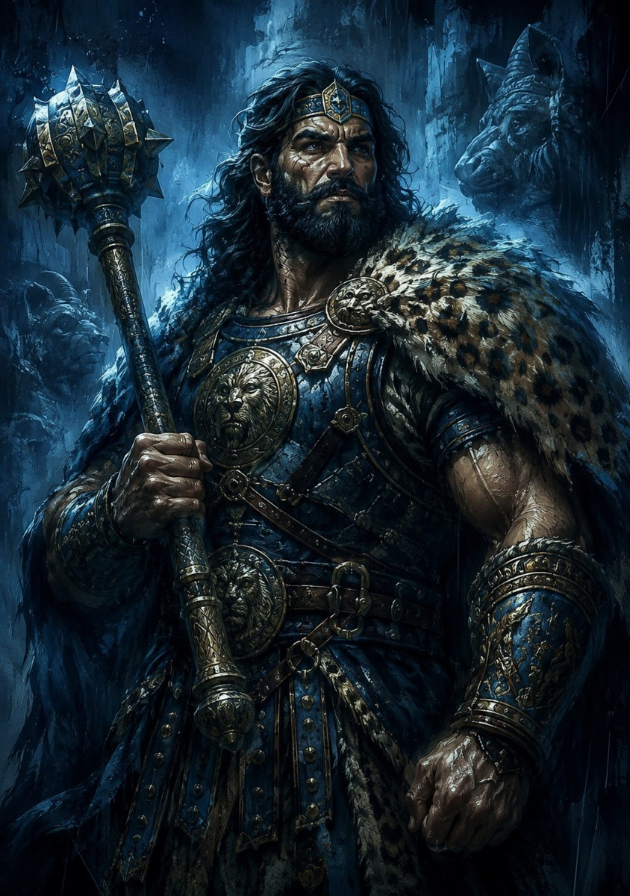
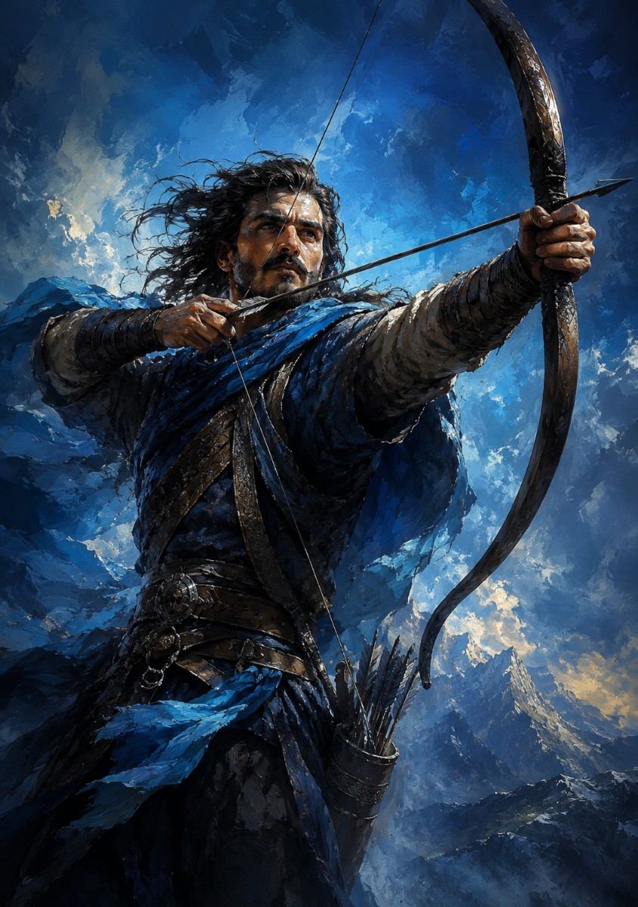

سناریو شاهنامه بازی مافیا
نسخه ۲.۰
معرفی سناریو شاهنامه
شاهنامه سناریوی ۱۰ نفره بازی مافیاست که در دو گروه اصلی بازی میشود: گروه اهریمن و گروه روشنایی.
این سناریو بر پایه نقشهای الهامگرفته از شاهنامه طراحی شده و محور اصلی آن تقابل ضحاک، بوف و افراسیاب در برابر نقشهای روشنایی است.
گروهها
- اهریمنها: ضحاک، بوف و افراسیاب.
- روشناییها: سیمرغ، جاماسب، کاوه آهنگر، رستم، آرش کمانگیر و دو یار روشنایی.
شروع بازی و روز معارفه
- طبق تأیید قبلی، بازی با روز معارفه شروع میشود.
- در روز معارفه بازیکنان فقط نقش خودشان را میدانند و اعضای گروه اهریمن هنوز یکدیگر را نمیشناسند.
- در شب معارفه، اعضای گروه اهریمن با یکدیگر آشنا میشوند و نقشها برای راوی تأیید میشوند.
انجمن بازی
- اعضای انجمن: رستم، کاوه آهنگر و ضحاک.
- وظیفه انجمن فقط تأیید مبارزه تنبهتن است.
نقشها
نقشهای گروه اهریمن

ضحاک
اصلیترین عضو گروه اهریمن، تعیینکننده هدف شب و عضو انجمن بازی.
- هر شب به انتخاب ضحاک یک نفر از اعضای روشنایی هدف حذف شب قرار میگیرد.
- ضحاک تنها فردی است که در مقابل مبارزه با رستم از بازی خارج نمیشود.
برچسبها: رئیس گروه اهریمن، عضو انجمن، هدف شب، مصون در برابر مبارزه با رستم.

بوف
نماد شومی و دارنده پر سمی.
- بوف در یکی از شبهای بازی پر سمی خود را به یک نفر اهدا میکند.
- در صورت استفاده پر سمی برای یکی از اعضای روشنایی، آن بازیکن از بازی خارج میشود.
- پر سیمرغ همیشه نسبت به پر بوف اولویت دارد.
برچسبها: یک پر سمی، خروج با پر، اولویت پر سیمرغ.

افراسیاب
یار اهریمن و دارنده سپر شب اول.
- افراسیاب در شب اول بازی یک نفر را دارای سپر میکند.
- سپر افراسیاب همان کارکرد سپر کاوه آهنگر را دارد.
- اگر بازیکنی که سپر افراسیاب را دارد هدف کمان آرش قرار بگیرد، از بازی خارج نمیشود و قابلیت استفاده از کمان به دست همان بازیکن سپردار منتقل میشود.
- اگر افراسیاب رستم را درست انتخاب کند، توانایی مبارزه از رستم گرفته میشود.
- اگر افراسیاب رستم را درست انتخاب کرده باشد، پس از خروج افراسیاب از بازی، رستم نیز همراه او خارج میشود.
- استعلام افراسیاب در روش سایه جاماسب مثبت است.
برچسبها: سپر شب اول، ضد رستم، مثبت در روش سایه.
نقشهای گروه روشنایی

یاران روشنایی
دو بازیکن بدون توانایی خاص.
- یاران روشنایی قدرت ویژه روزانه یا شبانه ندارند.
- آنها با صحبتهایشان به گروه روشنایی کمک میکنند.
برچسبها: ۲ بازیکن، بدون توانایی خاص.
سیمرغ
اولین نقش روشنایی و نجاتدهنده شهر.
- سیمرغ در طول بازی ۵ پر نجاتدهنده دارد.
- سیمرغ در شبهای مختلف میتواند این پرها را اهدا کند.
- کسانی که صاحب پر میشوند میتوانند از پر برای خودشان یا دیگری استفاده کنند، یا تصمیم بگیرند از پر استفاده نکنند.
- پر سیمرغ همیشه نسبت به پر بوف اولویت دارد.
برچسبها: ۵ پر، اهدا در شبهای مختلف، اولویت نسبت به پر بوف.

جاماسب
دارنده دانش و استعلامگیر روشنایی.
- جاماسب هر شب میتواند استعلام یک بازیکن را با یکی از دو روش «سایه» یا «خون» از راوی بپرسد.
- در روش سایه، سیمرغ، بوف و افراسیاب برای جاماسب مثبت میشوند.
- در روش خون، ضحاک و رستم برای جاماسب مثبت میشوند.
- فعلاً برای روش خون محدودیت جداگانه ثبت نمیشود، چون در متن فعلی محدودیت صریحی نیامده است.
برچسبها: روش سایه، روش خون، استعلام شبانه.

کاوه آهنگر
قیامکننده، فدایی شهر، دارنده سپر و عضو انجمن بازی.
- کاوه دارای یک سپر است.
- کاوه در شب، یک سپر را به یک نفر اهدا میکند.
- سپر کاوه همان کارکرد سپر افراسیاب را دارد.
- اگر بازیکنی که سپر کاوه را دارد هدف کمان آرش قرار بگیرد، از بازی خارج نمیشود و قابلیت استفاده از کمان به دست همان بازیکن سپردار منتقل میشود.
- اگر کاوه توسط گروه اهریمن در شب حذف شود، در شب بعد و در صورت حضور ضحاک در گروه اهریمن، گروه اهریمن قابلیت حذف شبانه را از دست میدهد.
برچسبها: یک سپر، عضو انجمن، توقف حذف شب بعد در صورت خروج شبانه توسط اهریمن.

رستم
مبارز شهر و عضو انجمن بازی.
- رستم در یکی از شبهای بازی یک نفر را برای مبارزه با خود انتخاب میکند.
- در شب بعدی، در صورت تشخیص رستم، فردی که برای مبارزه با رستم انتخاب شده از بازی خارج میشود.
- ضحاک تنها فردی است که در مقابل مبارزه با رستم از بازی خارج نمیشود.
- جزئیات دقیق «در صورت تشخیص رستم» هنوز نیازمند تأیید است.
برچسبها: مبارز شهر، انتخاب یک نفر در شب، عضو انجمن.

آرش کمانگیر
صاحب کمان.
- آرش در شب اول بازی یک نفر را صاحب کمان میکند.
- فردای آن شب، کسی که صاحب کمان شده میتواند با استفاده از آن یک نفر را از بازی خارج کند.
- اگر فردی که دارای سپر است مورد اصابت کمان قرار بگیرد، از بازی خارج نمیشود.
- در این حالت، قابلیت استفاده از کمان به دست همان فرد سپردار منتقل میشود.
برچسبها: کمان شب اول، خروج با کمان، انتقال کمان به سپردار.
ترتیب اجرای شب اول
- کاوه بیدار میشود و سپر خود را به یک نفر میدهد.
- تمام اعضای گروه اهریمن بیدار میشوند.
- افراسیاب در همان بیداری تیم اهریمن، سپر خود را به یک نفر میدهد.
- ضحاک هدف نهایی شب را اعلام میکند.
- سیمرغ بیدار میشود و در صورت استفاده از پر در آن شب، پر خود را اهدا میکند.
- جاماسب بیدار میشود و استعلام خود را با یکی از دو روش سایه یا خون انجام میدهد.
- آرش کمانگیر بیدار میشود و یک نفر را صاحب کمان میکند.
- همه دستها جلو میآید و راوی به بازیکن هدف اعلام میکند: «به شما کمان رسیده».
رستم در متن فعلی به عنوان نقشی آمده که «در یکی از شبهای بازی» یک نفر را انتخاب میکند؛ بنابراین بیداری رستم از ترتیب قطعی شب اول خارج شده است.
مبارزه تنبهتن و دفاعیه روز
- بعد از اتمام صحبتهای روز، بازیکنان به نوبت یک نفر را برای مبارزه تنبهتن انتخاب میکنند.
- اگر دو نفر در بازی همدیگر را برای مبارزه تنبهتن انتخاب کرده باشند، بعد از تأیید انجمن، آن مبارزه شکل میگیرد.
- در مبارزه تنبهتن هر دو نفر از خودشان دفاع میکنند.
- اگر یک نفر بیش از سه رأی برای مبارزه تنبهتن داشته باشد، وارد دفاعیه میشود.
موارد نیازمند تأیید
- جزئیات دقیق جمله «در صورت تشخیص رستم» و نسبت آن با خروج بازیکن انتخابشده توسط رستم.
- زمان دقیق انتخاب رستم توسط افراسیاب و اینکه این انتخاب در کدام شب یا مرحله انجام میشود.
- اینکه استفاده از پر بوف همزمان با هدف شب اهریمن ممکن است یا تیم اهریمن باید بین این دو یکی را انتخاب کند.
- قابلیت گرفتن توانایی توسط ضحاک در نسخه قبلی وجود داشت، اما در متن فعلی ویدئو نیامده است؛ بنابراین فعلاً از قانون اصلی v2 حذف شده و فقط در آرشیو v1 باقی میماند.
- متن فعلی فقط میگوید سیمرغ در شبهای مختلف پر اهدا میکند؛ تعداد دقیق پر در شب اول، اگر قانون جداگانهای داشته باشد، نیازمند تأیید است.
- روز معارفه طبق تأیید قبلی نگه داشته شده، اما در متن معرفی نقشهایی که در این مرحله بررسی شد، صریحاً نیامده است.
- نتیجه رأیگیری خروج بعد از دفاعیه و نسبت آن با مبارزه تنبهتن هنوز باید دقیقتر شود.